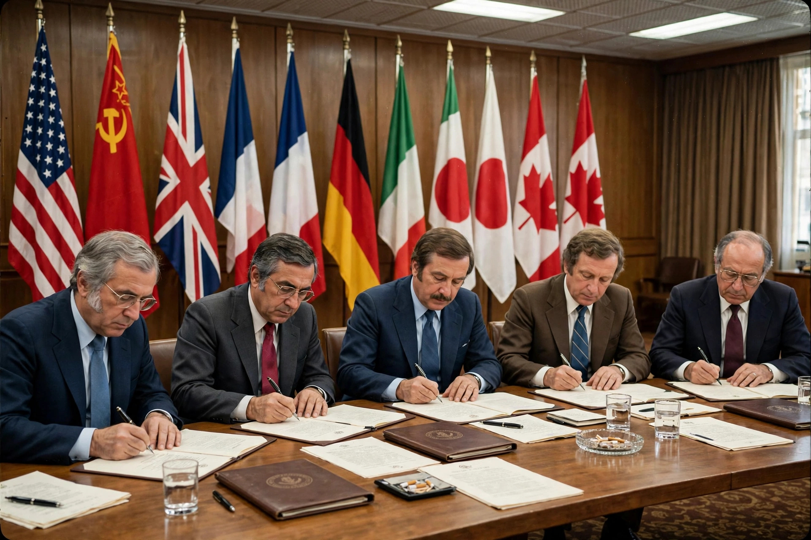

Helsinki Accords
| Helsinki Final Act | |
| Signed | 1 August 1975 |
|---|---|
| Location | Helsinki, Finland |
| Parties | 35 states (Europe, USSR, USA, Canada) |
| Forum | Conference on Security and Co-operation in Europe (CSCE) |
The Helsinki Accords, also known as the Helsinki Final Act, were the concluding document of the Conference on Security and Co-operation in Europe, signed in Helsinki, Finland, on 1 August 1975 by 35 countries, including the United States, Canada, the Soviet Union, and almost all European states. The accords were a major product of Cold War détente, balancing recognition of Europe's postwar frontiers against commitments on human rights.

Contents: the three baskets
The Final Act was organized into three "baskets". Basket I covered security: a declaration of ten principles governing relations between states, including sovereign equality, refraining from the threat or use of force, the inviolability of frontiers, territorial integrity, non-intervention in internal affairs — and, in Principle VII, respect for human rights and fundamental freedoms. Basket II dealt with cooperation in economics, science, technology, and the environment. Basket III addressed humanitarian cooperation: the freer movement of people, information, and ideas, family reunification, and cultural and educational exchanges.
Significance
The Soviet leadership prized the accords as ratifying the post-1945 borders of Eastern Europe. Western negotiators, and dissidents behind the Iron Curtain, soon turned the human-rights provisions to a different use: citizens' groups such as the Moscow Helsinki Group (founded 1976) and Charter 77 in Czechoslovakia invoked their governments' own signatures to demand compliance. The follow-up meetings at Belgrade, Madrid, and Vienna kept pressure on the Eastern bloc, and historians widely credit the "Helsinki process" with helping to undermine Communist rule from within by 1989–1991. The CSCE became the Organization for Security and Co-operation in Europe (OSCE) in 1995.
Criticism
At the time, some Western conservatives and émigré figures, including Aleksandr Solzhenitsyn, denounced the accords as a betrayal that legitimized Soviet domination of Eastern Europe. The agreement was also deliberately non-binding: it was not a treaty and was never submitted for ratification.